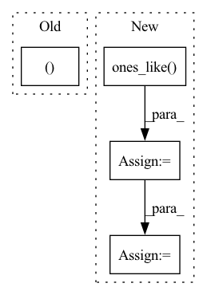

Pattern ID :39746

Before Change
)
// Ensure that keypoints outside the image are not visible
self.assertTrue((aug_joints[joints_outside_image, 2] == 0).all())
self.assertTrue((aug_joints[~joints_outside_image, 2] != 0).all())
def test_keypoints_horizontal_flip(self):
image = np.random.rand(640, 480, 3)
After Change
y = np.arange(image.shape[0])
xv, yv = np.meshgrid(x, y, indexing="xy")
joints = np.stack([xv.flatten(), yv.flatten(), np.ones_like(yv.flatten())], axis=-1) // [N, 3]
joints = joints.reshape((-1, 1, 3)).repeat(17, axis=1) // [N, 17, 3]
aug = KeypointsRandomAffineTransform(min_scale=0.8, max_scale=1.2, max_rotation=30, max_translate=0.5, prob=1, image_pad_value=0, mask_pad_value=0)
aug_image, aug_mask, aug_joints, _, _ = aug(image, mask, joints, None, None)
In pattern: SUPERPATTERN
Frequency: 4
Non-data size: 4
Instances
Fragment ID: 113211423
Project Name: deci-ai/super-gradients
Commit Name: cdc2f989667388ddf52be7c611b82eb7f44a7c74
Time: 2023-03-16
Author: ekhvedchenya@gmail.com
File Name: tests/unit_tests/transforms_test.py
M Class Name: TestTransforms
N Class Name: TestTransforms
M Method Name: test_keypoints_random_affine(1)
N Method Name: test_keypoints_random_affine(1)
M Parent Class: unittest.TestCase
N Parent Class: unittest.TestCase
M File Name: tests/unit_tests/transforms_test.py
N File Name: tests/unit_tests/transforms_test.py
M Start Line: 19
M End Line: 30
N Start Line: 17
N End Line: 40
'>
Before Change
prev_rejected = not accepted
rk_state = (fnew, tnew, ynew, h)
return rk_state, t1_achieved
class RK23(RKAdaptiveStepSolver):
error_estimator_order = 2
After Change
if accepted:
factor = torch.minimum(torch.full_like(new_factor, self.max_factor), new_factor)
if prev_rejected:
factor = torch.minimum(torch.ones_like(factor), factor)
not_t1_achieved = torch.logical_not(t1_achieved)
h[not_t1_achieved] *= factor[not_t1_achieved]
else:
factor = torch.maximum(torch.full_like(new_factor, self.min_factor), new_factor)
'>
Fragment ID: 113211405
Project Name: xitorch/xitorch
Commit Name: c6f0785664d60d1310778d43f14a3464660ea4d9
Time: 2021-12-30
Author: firman.kasim@gmail.com
File Name: xitorch/_impls/integrate/ivp/adaptive_rk.py
M Class Name: RKAdaptiveStepSolver
N Class Name: RKAdaptiveStepSolver
M Method Name: _single_step(3)
N Method Name: _single_step(3)
M Parent Class: object
N Parent Class: object
M File Name: xitorch/_impls/integrate/ivp/adaptive_rk.py
N File Name: xitorch/_impls/integrate/ivp/adaptive_rk.py
M Start Line: 85
M End Line: 122
N Start Line: 125
N End Line: 165
'>
Before Change
Returns D_e and D_o of setting 1 in the paper.
dataset_e, dataset_o = dataset_split_replay(dataset1, split_x)
dataset_e["flag"] = np.ones_like(dataset_e["terminals"])
dataset_o["flag"] = np.zeros_like(dataset_o["terminals"])
return dataset_e, dataset_o
After Change
dataset_o["flag"] = np.zeros_like(dataset_o["terminals"])
dataset_e, dataset_o_extra = dataset_split_expert(dataset1, split_x, exp_num)
dataset_e["flag"] = np.ones_like(dataset_e["terminals"])
dataset_o_extra["flag"] = np.ones_like(dataset_o_extra["terminals"])
for key in dataset_o.keys():
dataset_o[key] = np.concatenate([dataset_o[key], dataset_o_extra[key]], 0)
return dataset_e, dataset_o
'>
Fragment ID: 113211419
Project Name: ryanxhr/dwbc
Commit Name: a1e9d8a068c478128dea0b07d55a375b064eab7e
Time: 2023-01-04
Author: xuhaoran8@jd.com
File Name: get_dataset.py
M Class Name: AnonimousClass
N Class Name: AnonimousClass
M Method Name: dataset_setting1(4)
N Method Name: dataset_setting1(2)
M Parent Class:
N Parent Class:
M File Name: get_dataset.py
N File Name: get_dataset.py
M Start Line: 49
M End Line: 55
N Start Line: 49
N End Line: 60
'>
Before Change
tail_mask = torch.arange(T, device=output.device).unsqueeze(0) >= feat_lengths.unsqueeze(1)
output[tail_mask] = 0
return output, feat_lengths, alpha_sum.to(dtype), delay
return {
"cif_out": [output],
"cif_lengths": [feat_lengths],
"alpha_sum": [alpha_sum.to(dtype)],
After Change
// extend 1 fire and upscale the weights
if extend_mask.any():
// (B, T, C), may have infs so need the mask
upscale = (
torch.ones_like(output)
.scatter(
1,
feat_lengths.view(B, 1, 1).expand(-1, -1, C),
beta / tail_weights.view(B, 1, 1).expand(-1, -1, C),
)
)
output[extend_mask] *= upscale[extend_mask]
feat_lengths += extend_mask.long()
T = feat_lengths.max()
output = output[:, :T, :]
'>
Fragment ID: 113211417
Project Name: george0828zhang/torch_cif
Commit Name: 68e2689c475308cd5043cf1d25c49891b23e946a
Time: 2022-02-23
Author: cc.chang0828@gmail.com
File Name: cif.py
M Class Name: AnonimousClass
N Class Name: AnonimousClass
M Method Name: cif_function(7)
N Method Name: cif_function(9)
M Parent Class:
N Parent Class:
M File Name: cif.py
N File Name: cif.py
M Start Line: 29
M End Line: 216
N Start Line: 27
N End Line: 197